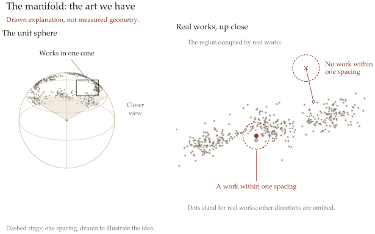
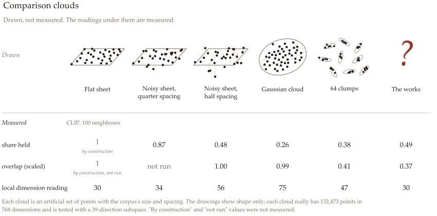
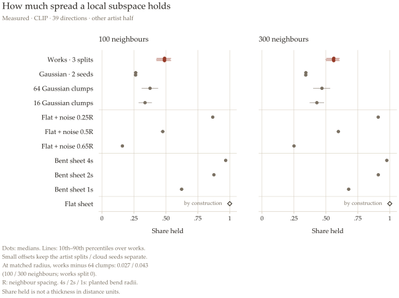
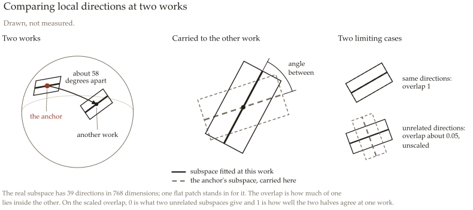
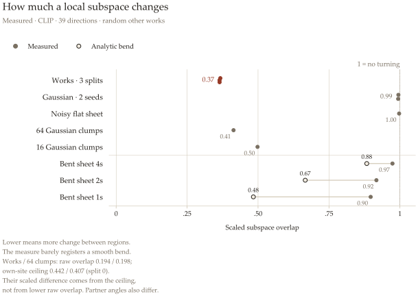
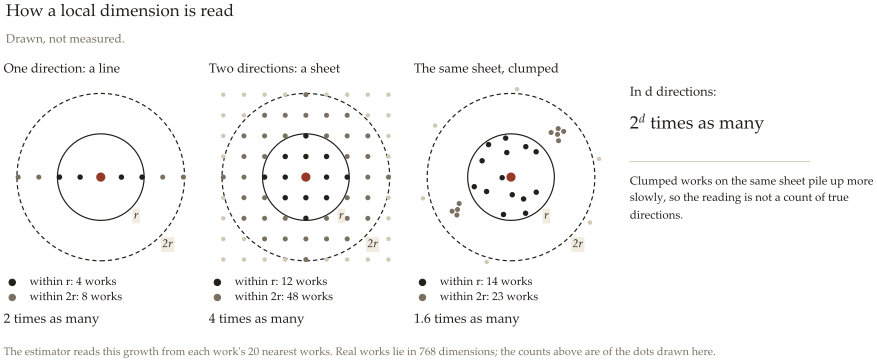

Q1 How are the works laid out inside the cone?

Earlier we saw all the works sit inside one cone, now let’s look at how they are laid out inside it. A distance would not mean much until we know that, so here we build a rough model of the layout.
A search needs this model, as it starts at a work and moves away from it (Figure 1). If the works around one work spread mainly along a few directions, a search could move along them. If those directions change from place to place, no one map of directions can guide it, which is a reason to try steps all around.
So, around one work, do the works spread mainly along a few shared directions, or more broadly across many? And are those directions the same elsewhere in the corpus? We ask both in CLIP, and only of works by artists other than the work’s own, for a reason we give below.
One work and its neighbours
Say we stand at one work, the anchor (Figure 2). Its neighbours are the works whose vectors are closest to its own.1 We leave out the works by the anchor’s own artist. A third of a work’s 15 nearest works are by the same artist (interesting, right? just kidding),2 so the nearest works would otherwise describe one artist’s series, and we want the layout of art around the work. The search’s bar leaves the artist out too (Q7). Among the 100 nearest, the artist’s own works are about a tenth, and keeping them in barely moves the first two findings below (finding D).
Each neighbour sits at some offset from the anchor, i.e., the step from the anchor to that neighbour, measured along the sphere. To see whether the offsets share directions, we look for the directions along which they spread the most (their principal components, as in PCA). The flat space those directions span is the local subspace, and we take 39 directions for it (finding C, below, says why).3
A fit like this always finds directions, though. On the points it was fitted on, its 39 directions hold most of their spread, even where the points have no local structure, as in the Gaussian cloud below.4 So we ask whether they also hold for works the fit has not seen.
![Four drawn panels. First, an anchor work with its nearest works inside a dashed ring, and crosses for works by its own artist, which are left out. Second, the same works split into a fit half and a test half by artist, each with its own ring. Third, a line fitted through the mean of the fit works, with the anchor off the line. Fourth, the test works with each offset split into a part held along the fitted line and a part not held. Share held is the spread along the fitted directions divided by all the spread.](figures/shape_walk_s.svg)
Testing on artists the fit has not seen
We split all the artists into two random halves,5 and around each of 2,000 random works (at most one from each of the 2,958 artists) the test runs in 4 steps (Figure 2):
- Take the work as the anchor, and leave its own artist out of both halves.
- From each half, take the anchor’s 100 nearest works and their offsets (100 is a choice, so finding A repeats the test with 300).
- Fit the local subspace on the offsets of one half.
- Measure the share held, i.e., the share of the other half’s spread that lies inside the fitted subspace.
The share held is 1 if the other half’s works spread only along the fitted directions, and it falls as they spread along others.

A. In CLIP, the region around a work is too thick for a search to slide along it as along a sheet. Around each work, the neighbours from one half of the other artists spread about as much off the 39 directions fitted on the other half as along them. The share held is 0.49 (the median over the 2,000 works).7 A flat sheet would hold 1 and a Gaussian cloud with no local structure about a quarter (Figure 4). The sheet with half a spacing of noise holds about what the works hold, and B and C tell the two apart.

Are the directions around a work the same elsewhere?
We fit a local subspace at the anchor on one half of the artists, and another on the other half at a random other work (a median of 58 degrees away). We carry the first along the sphere to the second so their directions can be compared (Figure 5). The overlap is how much of one lies inside the other. Even at the anchor the two halves’ fits overlap only in part. So we scale the overlap: 0 is what two unrelated subspaces give, and 1 is how well the two halves agree at the anchor. The result is the scaled overlap.

B. In CLIP, the works give a search no single map of directions to steer by. The directions around a work are only partly the ones around a random other work, a scaled overlap of about 0.4 (the median over 1,000 of the 2,000 works, 10 random others each).8 The Gaussian cloud and the sheet with half a spacing of noise read about 1, as each was built with one set of directions everywhere (Figure 6). The 64 clumps read about 0.4 too. In A, at the same neighbourhood radius, the clumps hold nearly as much as the works. So these tests do not show that the works have more structure than the clumps.

How many directions do the works use around a work?
On a line, a ball twice as wide holds about twice as many points, on a sheet about 4 times as many, and in more directions the count grows faster still. So at each work we take its 20 nearest works by other artists and watch how fast the count of them in a ball grows as it widens. The number of directions that growth points to is the local dimension (Figure 7).
C. In CLIP, no flat sheet we tried, thin or thick, fits the works around a work. The works read about 30 directions, the median over all 132,473, and the Gaussian cloud 75.9 A flat sheet with 39 directions, spaced like the works, also reads 30, but it holds 1 in A. The sheet with half a spacing of noise holds about what the works hold in A, but reads 56 here. The reading runs low, so 39 is the size of our fits and sheets, not a dimension of the works. This test cannot tell fewer directions from clumping.

We also notice that the local dimension reads higher in later art, about 26 before 1900 and 35 from 1960 on.10 Also, 26 works from 1900 to 1969, repainted by the decoder (the image generator the search paints with, Q8) from their own vectors, came out far from the works before 1900 and came back near the vector we asked for (far and faithful, Q7). These 26 sit in sparser places among the works before 1900 than other works of their time do, at a similar angle from the average direction of the works before 1900.11
We have no credible test for holes inside the region, as ours found none of the holes we planted.12 Even at a known centre, the distance to the nearest work reads as unusual only once a hole empties everything within 1.2 to 1.3 spacings (CLIP).
Does it matter which works we leave out?
Everything above leaves out the anchor’s own artist and tests on artists the fit has not seen, so we also ran the tests with each choice changed.
D. In CLIP, at these neighbourhood sizes, which works we leave out changes the share held and the overlap by about 0.04 or less, close to our tolerance of 0.03. Keeping the anchor’s own artist in barely moves the share held or the overlap. Splitting the fit and the test by work, so that an artist’s works can fall on both sides, raises the share held from about 0.49 to 0.52, right at our tolerance (a smaller change counts as none), so we call that one unresolved.13
So in CLIP, at one spacing and farther, our rough model is that nearby works by different artists have about half of their spread along 39 directions fitted around each work. In this model those directions change from region to region.
So we let a search try steps all around, a choice this layout suggests rather than forces. By arithmetic (39 of 768 directions), a step in an evenly random direction puts only about 5% of its squared length (i.e., about 23% of its length) in the 39 directions nearby works share most (Q10). Next, Q2 asks the same question of whole groups of works, and Q5 comes back to this geometry.
References
Footnotes
Which works count as neighbours depends on the distance, so here is ours. It is the chord between unit-length CLIP vectors. The tests on this page use the chord only, and we have not run them under raw Euclidean, Mahalanobis or diffusion distance.↩︎
Of a work’s 15 nearest works in CLIP among the 172,171 kept works, the share by the same artist is 0.34, against 0.002 by chance. So an artist’s works sit together, though that does not make them copies of each other. With the artist kept in, the artist’s works are about 10% of a work’s 100 nearest and 5% of its 300, in the half of the artists that holds that artist (finding D).↩︎
39 is not a measured dimension of the works (C). The share held uses each work’s 100 and 300 nearest works by other artists from each half, which lie about 41 and 43 degrees out, over three random splits of the artists. Every comparison cloud has the corpus’s 132,473 works and carries its artist labels, so the same leaving-out and split apply to it.↩︎
Scored on the works they were fitted on, the 39 directions hold 0.82 of the spread in the works, 0.70 in the Gaussian cloud and 0.75 in the 64 clumps (medians, CLIP, 100 neighbours). Keeping the anchor’s artist in gives the same 0.82.↩︎
We split by artist so that the test never repeats the artists of the fit. Offsets are measured along the sphere from the anchor (the log map). Each half’s offsets are centred on their own mean before the fit and before the test. So the fitted directions pass through the neighbours’ mean, and they need not pass through the anchor.↩︎
In CLIP a work’s 10th nearest work by another artist is a median of about 36 degrees away, and its nearest one about 33 degrees, so taking the 10th and not the nearest moves the unit little. The tests below look at one spacing and farther. We have not tested how the region looks closer in. The tests are in CLIP only, apart from the sparser places and the walk for holes. The works are also a sample, so a place with no work nearby is only a place this corpus has not filled, and art could still be there.↩︎
The share held is a share of spread, so it does not give a thickness in degrees. For the works it is 0.49 with 100 neighbours (the middle 80% of works 0.43 to 0.54) and 0.56 with 300, the same on all 3 splits. At the same two sizes the Gaussian cloud holds 0.26 and 0.34, the sheet with a quarter spacing of noise 0.87 and 0.91, the sheet with half a spacing 0.48 and 0.60, and the 64 clumps 0.38 and 0.47. At the works’ own radius the works hold only 0.03 and 0.04 more than the clumps. These tests do not separate what makes up the other half of the works’ spread: thickness along a few directions, clumps, or directions changing between regions.↩︎
Scaled, the works read 0.36 to 0.37 on the three splits, the Gaussian cloud 0.99, a flat sheet with half a spacing of noise 1.00 and the 64 clumps 0.41. Before scaling, the works and the 64 clumps overlap about equally, 0.194 and 0.198 (split 0). A smooth bend barely registers in this measure, so a low value means the directions change between regions, as clumps make them.↩︎
The local dimension is Levina and Bickel’s estimator (Levina and Bickel 2004) over each work’s 20 nearest works by other artists (CLIP, 132,473 works). The works’ median is 29.9, with the middle 80% from 18 to 48. A cloud of flat 39-direction clumps matched to the works’ spacing could not be built, so this test cannot say whether the works vary from place to place in dimension or only in density. For the local dimension we have not tried other surfaces.↩︎
The local dimension is 25.8 before 1900, 31.4 from 1900 to 1959 and 34.9 from 1960 on. This is a description only, with the caveats of C. One reading is that the rise comes from density as much as from directions, so it does not show that later art has 9 more directions, or that it is more complex.↩︎
Against 130 other works from 1900 to 1969 at a similar angle from the average direction of the works before 1900, they sit in sparser places in all 3 encoders (Cliff’s delta 0.46, 0.38 and 0.43, p at most 0.0011). The 26 were picked for how far their repaintings came out, though, so this partly restates how they were picked. The 3 encoders are not independent either, as the repaintings were decoded from the CLIP vectors.↩︎
The test walked from a work before 1900 toward a later work and measured, at each step, the distance to the 10th nearest work before 1900 by another artist. It found none of the holes we planted on such paths (radius 1 to 2 spacings, all the works removed or all but a fifth), in any encoder. To see what any such test could do at best, we took 500 works before 1900 as known centres and removed the works before 1900 around each. In CLIP a hole of 1.2 spacings takes out 462 of the 53,031 works before 1900 (0.87%) and is found at 1% of the centres, which is no more often than with no hole at all. A hole of 1.3 spacings takes out 1,850 (3.49%) and is found at every centre.↩︎
In the split by work the works’ paired differences have a median of 0.028 or 0.029 with 100 neighbours and 0.020 to 0.023 with 300, inside the tolerance of 0.03 at the same neighbour count. At the same neighbourhood radius, with 100 neighbours, the medians differ by 0.032 to 0.039 when the anchor’s artist is also kept in, which is past the tolerance, and by 0.027 to 0.035 with the artist left out, which straddles it. Inside the tolerance by count and past it by radius counts as unresolved. None of this says anything about smaller neighbourhoods, where an artist’s own works are a larger part.↩︎